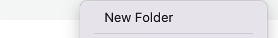
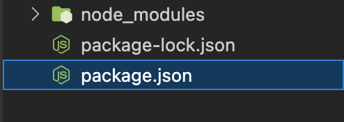
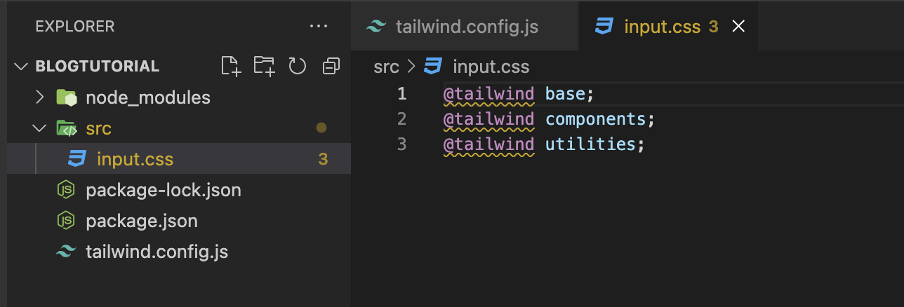
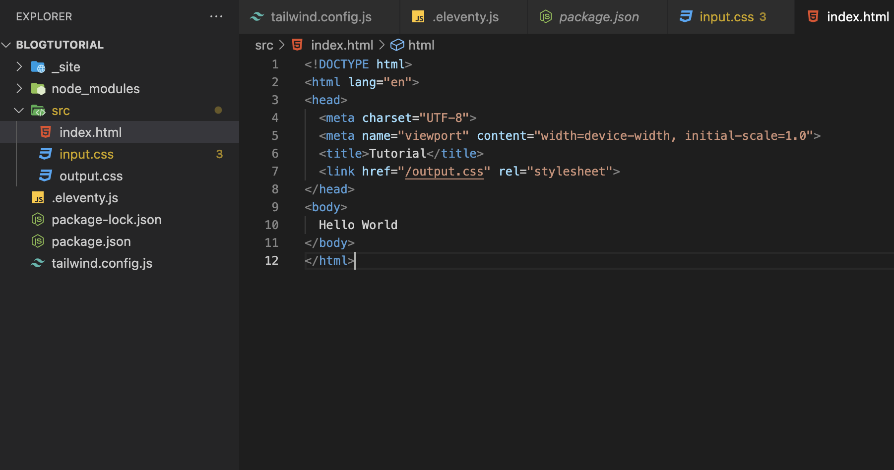
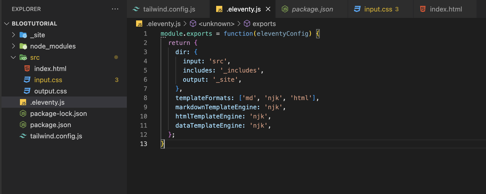
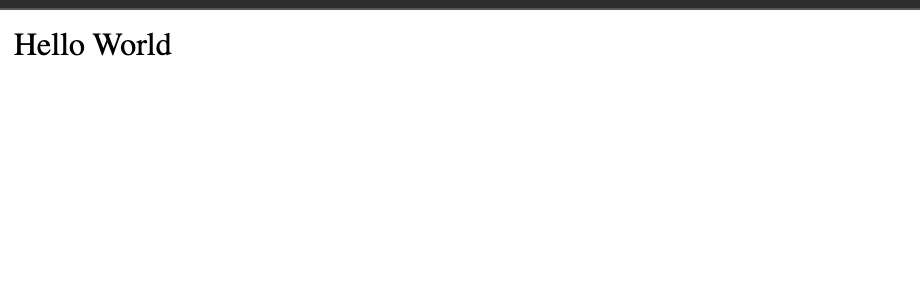
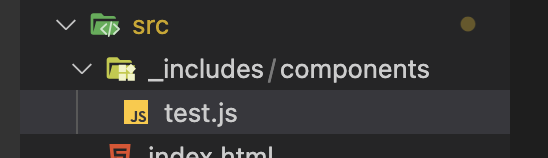
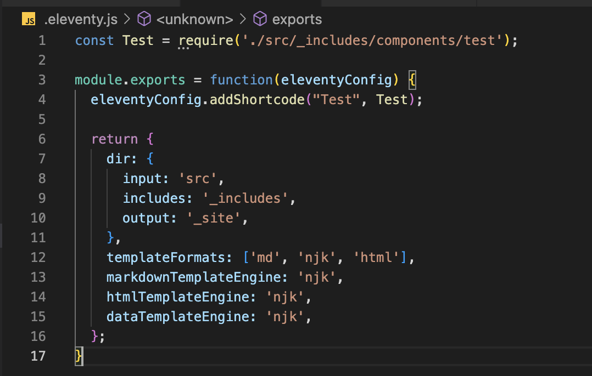
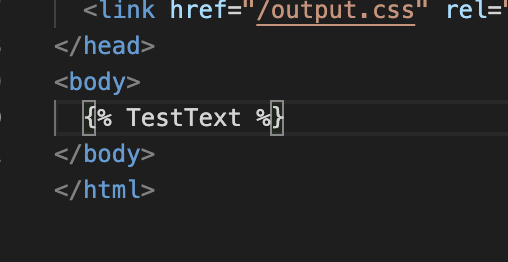

Written 3/11/34
Intro
11ty and TailwindCSS Allow for a fast and easy way to create a static site. Once they are setup, a dev can create much faster than with simple HTML and CSS. However, setup can be a bit tricky at times. In this blog, I will give a tutorial on creating and using nunjucks components in 11ty + TailwindCSS.
Code Overview
First, you will need to create a new folder to store everything and open it up in a terminal.

Then, we need to install Eleventy and TailwindCSS. First use these commands to install 11ty:
npm init -y
npm install @11ty/eleventy --save-dev
This should create the following package.json files where important information about our project gets stored:

11ty setup is now done, but before making our site we want to install TailwindCSS as well.
To do that, use these commands:
npm install -D tailwindcss
npx tailwindcss init
Which makes the tailwind config file for us:

Inside that tailwind config, we want to replace the 'content' line with the following:
content: ["./src/**/*.{html,js}"],
So that it can read all our project files correctly.
Then, create a new file called 'input.css' inside a folder called 'src' and paste in this code:
@tailwind base;
@tailwind components;
@tailwind utilities;

We should now have both 11ty and Tailwind all setup, all that is left to do is get a local server running to view our site,
and then create a home page where we can use a component.
Running Local Server
In separate terminals, run these two commands in order to automatically update our site with 11ty and Tailwind:
npx tailwindcss -i ./src/input.css -o ./src/output.css --watch
npx @11ty/eleventy --serve
Then, if we create the following simple eleventy.js and index.html files, we can see in our browser that everything is working!



Great! Now all that is left is making our component.
Creating A Component
First, make a folder called '_includes' with a 'components' folder inside it. Then make the js file for your component. Mine is called test.js.

Inside this file, you can put whatever html you want to have as a component. Maybe something you will want to use many times throughout your project, so that you can save time by not needing to redo any work making the component.
Mine just has a simple header with some text.

We have to add two lines of code to our eleventy.js file to get this to work now.
const Test = require('./src/_includes/components/test');
eleventyConfig.addShortcode("Test", Test);
So that it looks like the following:

And now if we add our component to index.html using the nunjucks syntax we see that it is working!
body of index.html:

Our local site shows the text from our component!
Conclusion
Components can be incredibly useful when making a website. One common example of a component you may want to reuse multiple times on different pages is a navbar, so that if you want to make a change you only need to do it in one place.
Hopefully this tutorial was helpful in allowing you to create faster and more efficiently than copying and pasting different html pieces on separate pages. Beyond just components though, there are many other things that make 11ty and tailwind great choices for creating a static site. Their advantages far outweigh the small amount of setup needed to get a project going.